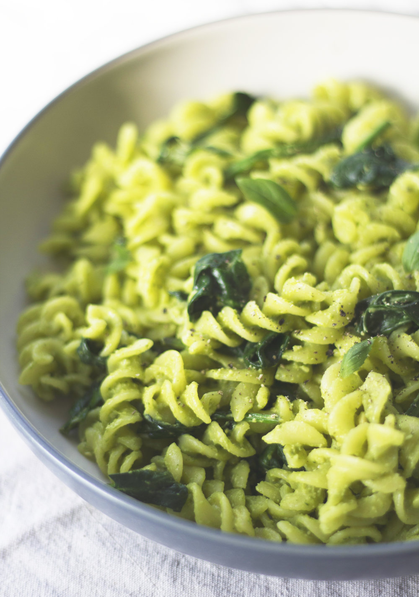

<!DOCTYPE html>
<html lang="en">
</html>
<meta charset="utf-8">
<title>Odin Recipes</title>
</head>
</html>

<body>
    <h1>Pesto Pasta</h1>
    

    <h2>Description</h4>
        Pesto pasta is easy to make and full of flavor. It tastes good hot or cold!

    <h3>Ingredients</h2>
<ul>
    <li>pasta noodles</li>
    <li>2 tablespoons olive oil</li>
    <li>1/2 cup chopped onions</li>
    <li>2 tablespoons pesto</li>
    <li>salt to taste</li>
    <li>2 tablespoons grated parmesan cheese</li>
</ul>

    <h4>Steps</h3>
<ol>
    <li>fill a large pot with slightly salted water and bring to a boil</li>
    <li>stir in pasta and cook for about 8-10 minutes then drain</li>
    <li>heat oil in frying pan over medium heat</li>
    <li>add onion and cook until golden</li>
    <li>stir in pesto and salt until warmed through</li>
    <li>add pesto mixture to hot pasta</li>
    <li>stir in grated cheese and toss well to coat</li>
</ol>

</body>
</html>